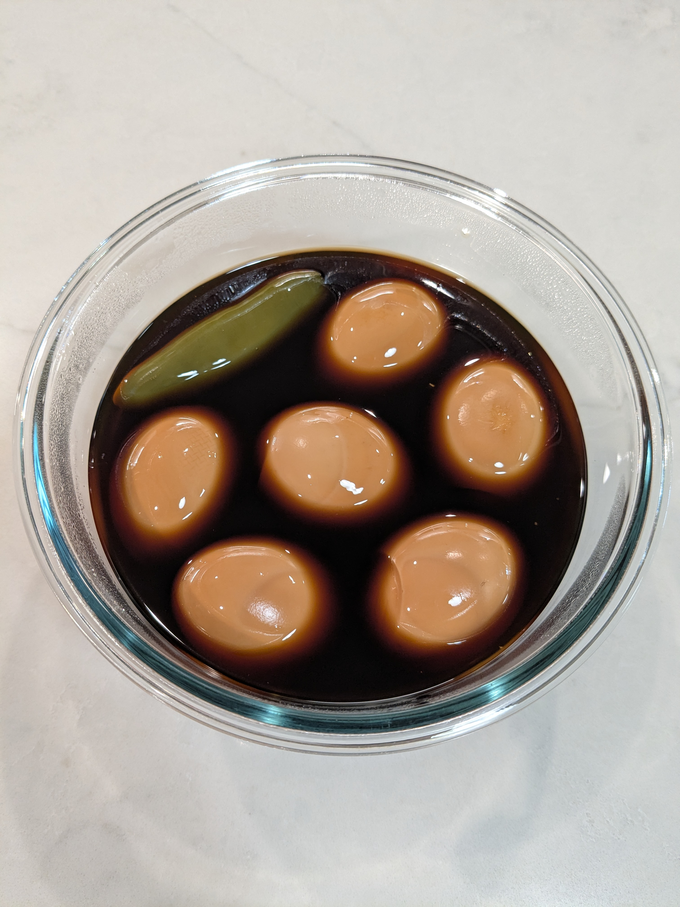

Gyeran-jangjorim (Soy-Braised Eggs)

Ingredients
- 6 boiled eggs
- 240 ml water
- 4 tbs soy sauce
- 2 tbs sugar
- 2 tbs Mirin
- 1 tbs rice vinegar
- 4 cloves garlic, bruised
- 1 stalk green onion, sliced
- 1 Jalapeño or Thai chili
Directions
- Add the sauce ingredients (soy sauce, sugar, Mirin, salt, and rice vinegar) and the aromatics (garlic and green onion) to a saucepan, bring to a boil on high heat, then reduce to medium-low.
- Add the boiled eggs and simmer, rolling the eggs gently, until they are evenly colored by the sauce
- Strain the sauce to remove the onions and garlic, add the chili, and continue to simmer until the sauce is reduced by half, about 15 minutes.
- Remove the pan from the heat and allow the eggs to cool. Serve warm or cold.
Chef's Notes
Michael Fritsche
mbf@fritsche.org